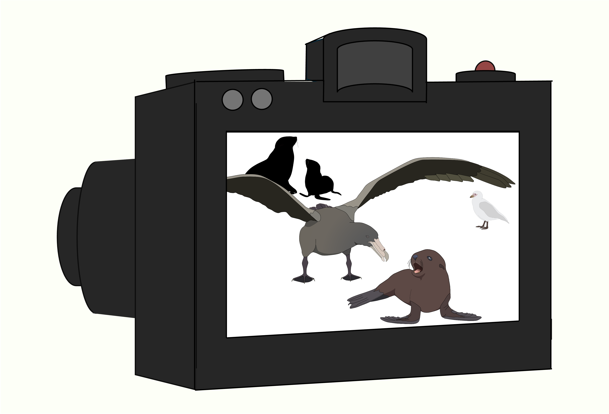
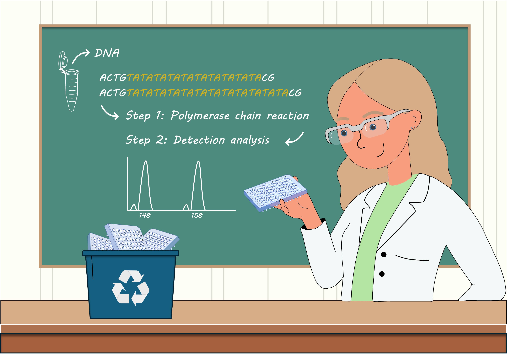
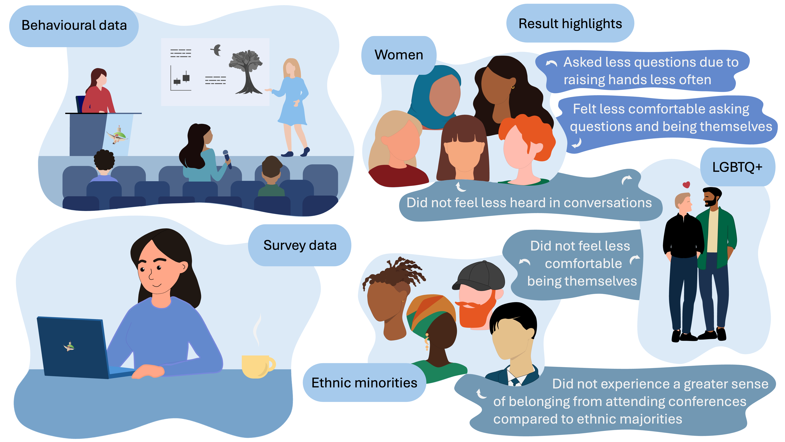
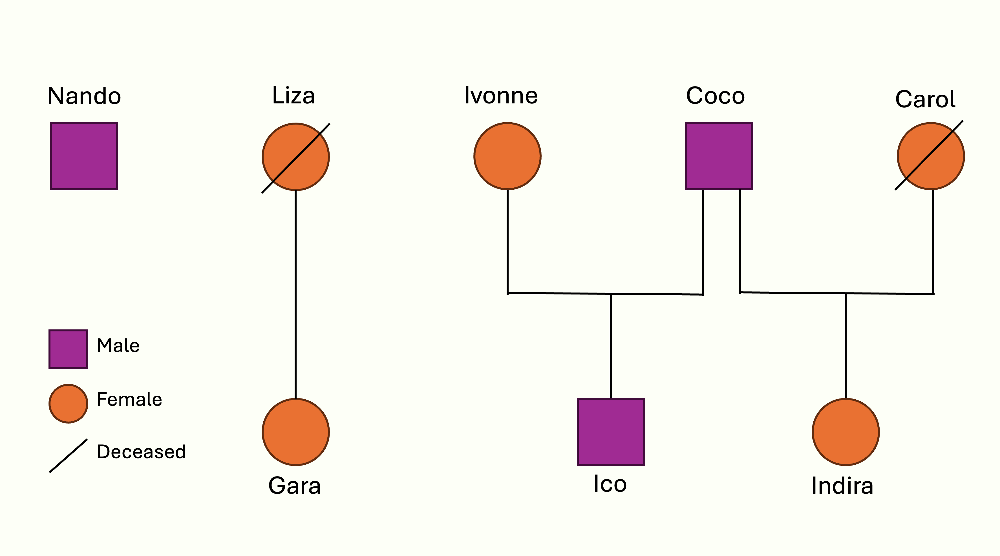

Projects
Current Projects
R2D2 Methods Project
Testing R2D2 methodology for variance decomposition and preparing a methods paper in collaboration with Paul Christian Bürkner.
Non-linear Plasticity Project
Preparing a ‘how to study’ methodological paper to help researchers investigate non-linear plasticity.
Plasticity ~ Fitness Project
Examining the direct and indirect fitness consequences of individual variation in phenotypic plasticity.
Pinniped Senescence Project
Quantifying patterns of reproductive and physiological senescence in Galapagos sea lions and Antarctic fur seals.
Male Territories Project
Using automatic detections to map male territories and explore differences in inequality between two neighbouring Antarctic fur seal colonies.
Bird Island Imagery Project II
Using automatic detections to compare predation pressure between two neighbouring Antarctic fur seal colonies differing four-fold in population density.
Gene Expression Project
Using differential gene expression profiles to investigate the effects of density, food availability, life-history stage and developmental time point on Antarctic fur seals.
Trait Decomposition Project
Decomposing phenotypic traits to understand the genetic and environmental contributions in Antarctic fur seal pups.
Completed Projects
Perceived Density Project
Exploring how individual differences in perceived population density shape behavior, ecological niches, and evolutionary outcomes.

Bird Island Imagery Project
Investigating how fine-scale density patterns shape predator-prey interactions using a remote camera and automated detection.
Epigenetics & NC3
Exploring how epigenetic mechanisms shape individualized niches and contribute to eco-evolutionary diversity.

Sustainable Genetics Project
Evaluating sustainable reuse of single-use microtitre plates in labs to reduce plastic waste without compromising genotyping accuracy.
Pup Growth Project
Investigating how inbreeding affects pup survival in Antarctic fur seals amid environmental change and food scarcity.

EDI Study
Examining gender disparities in question-asking at a scientific conference to understand barriers to inclusion and equity in academic settings.

South American Sea Lion Project
Using microsatellites to determine paternity and reconstruct pedigrees in captive South American sea lions.